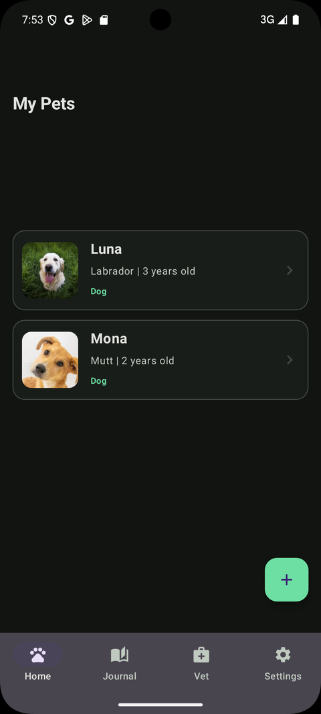
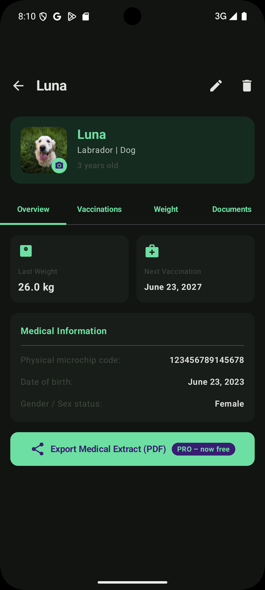
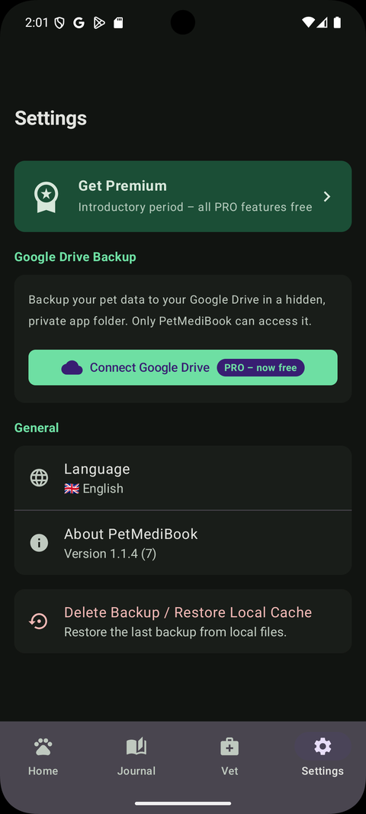

Vacunas y registros, en orden
Registra las vacunas con fechas, el peso a lo largo del tiempo, los documentos y los datos del veterinario — en un lugar privado, listo para exportar como PDF para tu veterinario.
Diario y tarjetas de recuerdos
Captura los momentos del día a día y convierte un hito en una tarjeta bonita para compartir.
Recordatorios que tú decides
No te pierdas las fechas de vacunas ni los eventos que te importan — tú decides qué y cuándo.
Un vistazo por dentro
Limpia, privada y pensada para el día a día con tu mascota.



Ya disponible en Google Play
Descarga gratis. Sin cuenta. Funciona sin conexión.
Preguntas frecuentes
Todo lo que necesitas saber antes de descargarla.
¿PetMediBook es gratis?
Sí — es gratis para descargar y usar. Algunas funciones podrían formar parte de un plan premium opcional en el futuro.
¿Necesito una cuenta?
No, funciona sin registro. Tus datos se quedan en tu dispositivo.
¿Funciona sin conexión?
Sí, totalmente sin conexión. La copia de seguridad en tu propio Google Drive es opcional.
¿Qué puedo registrar?
Vacunas con fechas, peso a lo largo del tiempo, documentos del veterinario, recordatorios y recuerdos — para una o varias mascotas.
¿Puedo exportar los registros?
Sí, puedes exportar un extracto médico claro en PDF para tu veterinario.
¿Es asesoramiento médico?
No. PetMediBook es una herramienta de registro y recuerdos, no un servicio médico ni de diagnóstico.
PetMediBook es una herramienta de registro y recuerdos — no es asesoramiento médico. Tus datos se quedan en tu dispositivo; la sincronización con tu propio Google Drive es opcional. No requiere cuenta.
Sigue el proyecto
Creada por una sola persona, en público. Descárgala hoy — y sigue lo que viene.